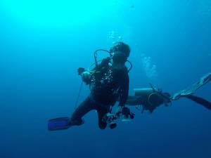

|
 |
PHUA Jun WeiHonours Student
Email: a0078535(AT)u.nus.edu |
Honours Project
Reef-building corals and the dinoflagellate Symbiodinium often live together in a mutualistic relationship. Recently, a vast diversity of Symbiodinium has been uncovered, with some species being associated with increased tolerance to stress in the coral-algal holobiont. It is also known that the thermal history of reefs has an effect on their future resilience to bleaching, in part due to a switch in the diversity of the symbiont community during previous bleaching events. My project attempts to investigate the change in symbiont community, in response to thermal stress, through controlled experiments and with the use of molecular genetic tools. This will contribute to our understanding of reef dynamics in the face of climate change.
Background
I am pursuing a degree in Life Sciences, with a concentration in Environmental Biology. The marine world fascinates me, and I am thankful for the opportunity to explore it from a scientific perspective.